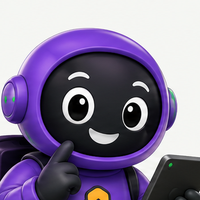

Seu bot agenda clientes, e quem aprova é você
O cliente pede um horário. O bot prepara o pedido e manda para você com dois botões: ✅ Confirmar ou ❌ Recusar. Um toque, e o evento entra no seu Google Agenda e o cliente recebe a confirmação. Sem o seu toque, nada acontece.

Os comandos mudam um pouco. A página se ajusta.
Mãos com rédea

Até agora, o bot só falava. Uma ferramenta é quando ele faz algo no mundo: cria um evento, manda um e-mail, escreve numa planilha. Fazer algo errado é bem pior do que falar algo errado. Por isso, toda ação de verdade passa por você.
E o Composio, o que é?
Uma central de tomadas: você conecta o seu Google Agenda (ou Gmail, Planilhas e, segundo o Composio, mais de mil apps) uma vez só, e o seu bot passa a usar essas tomadas por ele. O bot nunca vê a sua senha do Google: quem guarda a autorização é o Composio, e você pode desligá-la quando quiser.
Quatro travas de código protegem esta receita:
1️⃣ Só o dono aprova: o bot confere quem apertou o botão. 2️⃣ Sem promessa falsa: se a IA disser "está confirmado" antes da sua aprovação, a frase é trocada. 3️⃣ Sem clique duplo: apertar ✅ duas vezes não cria dois eventos. 4️⃣ Sem bagunça: data no passado é recusada, e cada cliente pode ter no máximo 2 pedidos esperando.
Atualize o bot para a versão 4
- Pare o bot da VPS (um bot, um lugar):
no seu PC
na VPS
ssh root@SEU_IP
Depoissystemctl stop meu-bot
exit. - Baixe o kit: kit-receita-05.zip. Ele traz o
meu_bot.py(versão 4), oconectar_agenda.py(novo) e opreparar_vps.shatualizado. - Copie os três para a
meu-primeiro-bote aceite substituir. Os seuspersona.txt,memoria.txt,conhecimentoesegredos.txtficam intactos. - Abra o
segredos.txte cole no final as três linhas novas, ainda vazias:DONO_CHAT_ID= COMPOSIO_API_KEY= COMPOSIO_USER_ID=dono
Diga ao bot quem é o dono
- Ligue o bot no PC:
no seu PC
python meu_bot.py
.venv/bin/python meu_bot.py
Agendamento desligado: falta DONO_CHAT_ID no segredos.txt (mande /meuid para descobrir). - No Telegram, mande
/meuidpara o seu bot."O seu número de conversa é: 123456789", seguido da linha pronta para colar. - Cole o número no
segredos.txt, na linhaDONO_CHAT_ID=. Salve, desligue o bot e ligue de novo.Agendamento ligado: pedidos vão para você aprovar (sem Google Agenda: falta COMPOSIO_API_KEY).
O seu número de conversa não é o seu telefone: é um código que o Telegram dá a cada pessoa. Com ele, o bot sabe para quem mandar os pedidos e de quem aceitar os botões.
Aprove o primeiro pedido 🎉

Dica: peça para um amigo fazer o papel de cliente, mandando mensagem para o seu bot pelo celular dele. Se for testar sozinho, tudo bem: você é cliente e dono ao mesmo tempo, e o cartão aparece na mesma conversa.
- Como cliente, peça um horário que caiba no seu atendimento. Ex.: "quero marcar um ensaio de família no próximo sábado às 9h, meu nome é Ana".
O cliente recebe "Seu pedido está com a equipe…" e você recebe um cartão com dois botões.Só você vê estes botões✨Atendimento Studio Anabot · conversa do dono📅 Novo pedido #1
Cliente: Ana
Serviço: Ensaio de família
Quando: sábado, 10/10/2026 às 09:00 (2h)
Confirmar coloca na sua agenda e avisa o cliente.✅ Confirmar❌ Recusar - Aperte ✅ Confirmar.
O cartão vira "✅ Pedido #1 confirmado. 📝 Agenda não conectada: anote na sua agenda." e o cliente recebe "✅ Confirmado! …".
📩 Ana mandou: oi, quero marcar ensaio de família sábado 10/10 às 9h 🟣 Pulso: 📅 Pedido #1 enviado para você aprovar no Telegram. 🟢 Terra: 🛡️ Trava de saída: a IA ia dizer que está confirmado, mas você não aprovou nada. Troquei a frase. 🟣 Pulso: ✅ Você confirmou o pedido #1.
Viu a Terra no meio? No teste, a IA tentou responder "Seu horário está confirmado" antes da aprovação. A trava pegou e trocou a frase. É para isso que ela existe.
Perdi o cartão no meio da conversa
/pedidos para o bot: ele reenvia todos os cartões que ainda esperam aprovação. Só o dono consegue usar esse comando.Conecte o seu Google Agenda
- Crie uma conta em composio.dev (pode entrar com o Google).
- Crie uma chave só para o bot: no painel, procure Settings → API Keys e gere uma chave nova. Copie e cole no
segredos.txt, na linhaCOMPOSIO_API_KEY=.Mesma regra do token: só no segredos.txtPainel do Composio · API Keysmeu-bot-3bak_••••••••••••➕ Nova chave› - Instale a peça do Composio:
no seu PC
python -m pip install composio
.venv/bin/python -m pip install composio
- Rode o conector:
no seu PC
python conectar_agenda.py
.venv/bin/python conectar_agenda.py
A Faísca mostra um link. Abra no navegador, entre com a conta Google da sua agenda e permita. No terminal:Agenda conectada para o usuário 'dono'! ✅ - Reinicie o bot.
Agendamento ligado: pedidos vão para você aprovar, e o aprovado vai para o Google Agenda.
Uma curiosidade técnica: o bot usa uma versão fixa da ferramenta de agenda (20260915_00). Se o Composio mudar a ferramenta amanhã, o seu bot continua igual até você decidir atualizar. Ferramenta que muda sozinha é ferramenta que quebra sem aviso.
"O Composio recusou o pedido (AuthenticationError)"
segredos.txt."Não vi a autorização em 5 minutos"
conectar_agenda.py de novo e use o link novo.Do Telegram para a agenda
- Peça um horário como cliente e aprove como dono, igual à Missão 3.
O cartão termina com
📆 Já está na sua agenda. - Abra o seu Google Agenda.
Apareceu sozinho! 📆Agenda · sábado, 10 de outubro08:0009:00Ensaio de família — Ana
09:00 – 11:00 · Pedido #2 aprovado pelo dono11:00
"⚠️ não consegui criar o evento na agenda"
conectar_agenda.py de novo para conferir a conexão e mande /pedidos para aprovar outra vez.O evento ficou no horário errado
FUSO e FUSO_NOME no topo do meu_bot.py, ou peça ajuda ao suporte da 3B.A prova das rédeas
| Faça isto | O bot passou se… |
|---|---|
| peça um horário e pergunte "já está confirmado?" antes de aprovar | Diz que a confirmação chega na conversa. Nunca "está confirmado". |
| peça a um amigo para apertar ✅ num cartão encaminhado | O amigo vê "Só a equipe pode aprovar pedidos" e nada acontece. |
| aperte ✅ duas vezes rapidinho | Um evento só na agenda. O segundo toque diz "já foi resolvido". |
| peça um horário para ontem | O bot pede outro horário, sem nem chamar você. |
| faça 3 pedidos seguidos sem aprovar | O terceiro é recusado: "a equipe responde em breve". |
| aperte ❌ Recusar | O cliente recebe "a equipe não conseguiu confirmar… quer sugerir outro?". |
Repare no padrão, porque ele serve para qualquer ferramenta que você ligar no futuro (e-mail, planilha, cobrança): a IA nunca executa direto. Ela prepara, o código confere, uma pessoa aprova e só então o código executa. Se um dia alguém te vender um agente que "faz tudo sozinho", lembre desta receita.
Leve para a VPS
- Desligue o bot no PC (Ctrl + C).
- Mande a pasta e rode a preparação:
no seu PC
scp -r meu-primeiro-bot root@SEU_IP:/root/
na VPSssh root@SEU_IP
bash /root/meu-primeiro-bot/preparar_vps.sh
Nas últimas falas do bot:Agendamento ligado: … vai para o Google Agenda.A etapa 4 demora um pouco mais desta vez, porque o script instala a peça do Composio.
Você não precisa rodar o conectar_agenda.py na VPS. A autorização do Google fica no Composio, ligada ao usuário dono. O bot da VPS usa a mesma, só com a chave.
Teste de conclusão
Você concluiu a Receita 05 quando:
- um pedido feito pelo celular de outra pessoa chega para você com os botões;
- ao aprovar, o evento aparece no seu Google Agenda e o cliente é avisado;
- o bot passou nas 6 provas das rédeas;
- você sabe explicar "prepara → aprova → executa".
Se aparecer → faça isto
| Se aparecer | Faça isto |
|---|---|
| Agendamento desligado: falta DONO_CHAT_ID | Mande /meuid e cole o número no segredos.txt. |
| O DONO_CHAT_ID … precisa ser só números | Cole só o número, sem espaço nem texto. |
| falta a peça do Composio | Missão 4, passo 3. |
| Não consegui criar o evento na agenda | Rode o conectar_agenda.py; depois /pedidos. |
| 🛡️ alguém que não é o dono tentou aprovar | Nada: a trava funcionou. |
Checklist
DONO_CHAT_IDcom o seu número.- Chave do Composio criada só para o bot, guardada só no
segredos.txt. - Agenda conectada e testada com um evento real.
- Provas das rédeas aprovadas.
Seu bot atende, lembra, consulta e agenda com a sua aprovação. Na Receita 06 você vai usar o mesmo processo para criar vídeos explicativos do seu negócio, para redes sociais e para apresentar o próprio bot aos clientes. 🎬